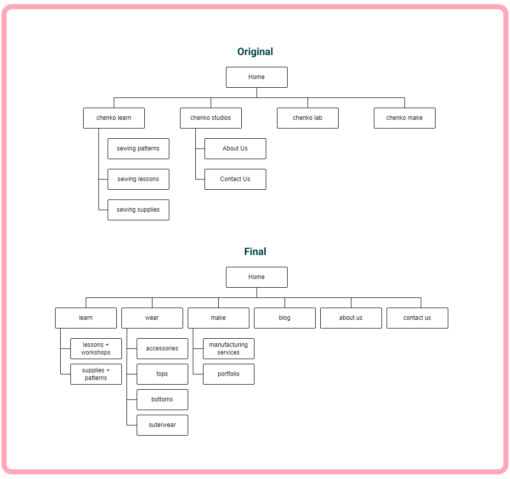

chenko studios Website Redesign
chenko studios is an apparel production studio and sewing lesson provider based in Vancouver, B.C. I was hired to redesign and develop the website.

Research
The redesign of the website started with onboarding where I learned about the company values, mission, and branding. I took this as an opportunity to learn more about the industry as I did not have any experience in apparel production. I was able to establish their target audience and better understand their business goals after speaking with the client.
I learned that the website was quickly thrown together by the client and has served them well thus far. However, they were ready for an upgrade to increase their reach and elevate their brand.

Competitive Analysis
After onboarding, I conducted further research on other competitive brands in their industry. I found that many of the competitors only offered one of the services that chenko studios was offering, so I was able to take insight from each and piece them together. For example, production studios had portfolios that would show off their work and clearly list their manufacturing services. Whereas sewing lesson studios were more CTA heavy.
Website audit
Before the redesign, I needed to determine what was or was not working on their website. After having several candidates use and explore the website, I found two major problems:
- The navigation was not intuitive for users.
- Users did not understand what kind of business chenko studios is.
Redefining Sitemap
To address the first issue with their current website, I redesigned the site map, because the original website navigation had confusing labels that were not intuitive to users.
I closely collaborated with the client to determine a better site structure that would still reflect the brand, but also be intuitive for first time users to navigate. We landed on the following structure that used the terms that the client originally had, but shortened, and an about, blog, and contact page at global navigation level as well. This will let users quickly navigate to the page they are looking for and reduce frustration.
Thumbnail Sketches
To address the issue of users not knowing what chenko studios does, I first created thumbnail sketches on paper to quickly get ideas out first. I treated each “branch” of chenko (learn, make, wear) as separate landing pages that users could be taken to. This meant that each page should be sufficient to tell users what that service does. I decided that a banner that featured brief text explicitly explaining what the business offers accompanied by a relevant image would best communicate this to users what they are looking for.
Wireframes
I then took my sketches into Figma and created wireframes so they were more presentable and easily accessible by all stakeholders to review. The wireframes also provided more of a concrete visual of how the website would look, and what kind of assets were needed. I incorporated CTAs that were targeted towards individuals looking for sewing lessons and more informational sections for those seeking manufacturing services. After several iterations and follow-ups with the client, I began gathering and creating assets.
Development
Throughout the previous phases, I was playing around with Squarespace to familiarize myself with the platform and its capabilities, which also affected my design decisions. After implementing all the agreed upon pages, I conducted a quality assurance test by ensuring that all pages were production ready. I also created documentation on how to make future additions and changes while keeping the design coherent.
Takeaways
This was an exciting project that helped me establish my creative process. I was able to adapt and apply all the research techniques and design processes while redesigning the website. I also had the opportunity to learn Squarespace and learned to appreciate the practicality of content management systems for small businesses.
In the future I would like to conduct user tests and track website metrics to measure the success of my designs and to continue improving upon the website.